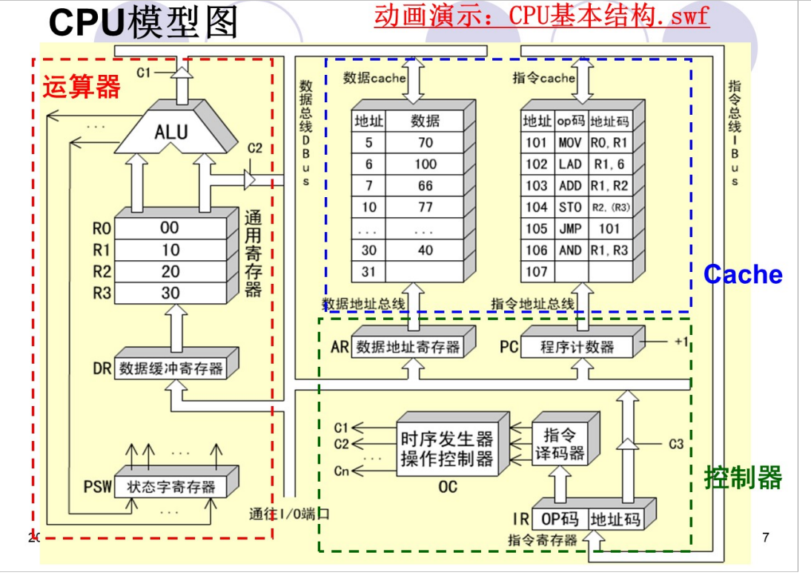

计算机组成原理
第二章
位，字节，字：
解释：
位=比特=bit ： 信息的最小单位，等于0或1
字节 = byte ：可以表示一个英文字母，数字或者符号
字 = word ： 描述计算机一次性处理事务的固定长度
说明：
1 byte = 8 bit 大小相当于2^8 =256
在说字长和字之前，需要说明在多少位操作系统的环境下
1 word = 16 bit [16位操作系统下]
数据格式
移码表示
通常用于表示浮点数的阶码
移码和补码的符号位相反
表示的范围：8位移码 00000000-11111111
优点：
1.可以直观的判断两个数据大小
2.阶码全为0时，浮点数下溢

浮点数表示：
一般表示形式

第五章CPU

5.1 CPU的功能和组成
主要寄存器
1.DR（数据缓冲寄存器）
暂时存放运算器与外界传送的数据
2.通用寄存器
暂时存放ALU运算的数据或结果
3.PSW（状态条件寄存器）
C：进位标志
V：溢出标志
Z：零标志
W：符号标志
4.AR（数据地址寄存器）
保存当前CPU所访问数据的内存单元地址
5.PC（程序计数器）
始终存放下一条指令的地址，对应于指令Cache的访问
6.IR（指令寄存器）
保存当前正在执行的一条指令
其对应的操作码字段直接作为指令译码器的输入
操作控制器与时序产生器
数据通路：两个部件之间传送信息的通路
操作控制器
根据指令操作码和时序信号，产生各种操作控制信号；
建立正确的数据通路，从而完成指令的执行
分类（根据设计方法）
1.硬布线控制器：采用时序逻辑技术实现
2.微程序控制器：采用存储逻辑实现
3.两种方式的结合
5.2 指令周期
指令周期的基本概念
CPU执行程序是一个“取指令—执行指令” 的循环过程
对于一个指令周期来说，我们取出一条指令，然后执行它，至少需要两个 CPU 周期。取出指令至少需要一个 CPU 周期，执行至少也需要一个 CPU 周期，复杂的指令则需要更多的 CPU 周期。
指令周期
CPU从内存中取出一条指令，并执行完毕的时间总和
CPU周期
又称为机器周期，一般为从内存读取一条指令字的最短时间
一条指令执行过程被划分为若干阶段（比如取指、译码、执行等），每一阶段完成所需时间。一般情况下一个CPU周期是若干时钟周期之和。
时钟周期
也叫做节拍脉冲或T周期，是计算机工作的基本时间单位
MOV R0,R1 指令的指令周期
它需要两个CPU周期
取指周期
1.PC–>ABUS(地址总线)–>指令Cache，译码并启动 PC读，指令Cache启动
2.指令Cache–>IR 指令Cache读，IR写
3.PC+1–>PC，为下条指令做准备 PC增加
4.IR中的操作码被译码或测试，CPU识别出是指令MOV
执行指令周期
1.R1–>ALU ，R1中数据通过ALU传送 R1读，ALU传送控制
2.ALU–>DBUS（地址总线）–>DR–>R0 ALU输出，DR锁存，R0写
LAD R1,6 指令周期
取指周期
与MOV一致
执行周期
IR–>DBUS–>AR IR读，AR锁存
AR–>ABUS–>数据Cache，译码并启动 数据Cache启动
数据Cache –>DBUS–>DR–>R1 数据Cache读，DR锁存，R1写
执行周期需要两个CPU周期的原因：源操作数的地址和源操作数都需要经过DBUS传送
ADD R1,R2指令周期
取指周期
同MOV
执行周期
R1、R2 –> ALU R1,R2读
ALU做加运算，将两数相加 ALU加
ALU –>DBUS –>DR –>R2 ALU输出，DR锁存，R2写
STO R2 ,(R3)指令周期
取指周期
同MOV
执行周期
R3 –>DBUS–>AR 发出地址启动数据Cache R3读，AR锁存
该过程为间址周期
R2 –> DBUS –>数据Cache R2读，数据Cache写
方框语言表示指令周期
1.方框
代表一个CPU周期
2.菱形
通常用来表示某种判别或测试
3.~
表示一条指令已经执行完毕，转入公操作

5.3 时序产生器和控制方式
5.4 微程序控制器
微程序控制原理
利用软件方法来设计硬件
规整性、灵活性、可维护性等特点
广泛使用
基本思想
把操作控制信号编成“微指令”
微操作分类
相容性微操作：同时或者在同一个CPU周期可以并行执行的微操作
相斥性微操作：上面反之
微指令和微程序
微指令一般包含操作控制和顺序控制
操作控制：用于发出管理和指挥全机工作的控制信号
顺序控制：用于决定产生下一条微指令的地址
所有的微指令都存放于控制存储器中，使用地址访问
微程序：
能够实现一条机器指令功能的多条微指令序列
每条机器指令都对应着一段微程序
微程序控制器原理框图
控制存储器（CM）：存放实现指令系统所需要的全部微指令 —–主存储器（MM）
微指令寄存器：存放当前正在执行的一条微指令，由微地址寄存器和微命令寄存器构成
微地址寄存器：决定要访问的下一条微指令的地址
微命令寄存器：保存一条微指令的操作控制字段和判别测试字段的信息
地址转移逻辑： 跳跃寻址微指令时，负责微地址的修改
微程序设计技术
微命令编码
直接表示法：
操作控制字段中每一位代表一个微命令，
简单直观，执行快
容量较大
编码表示法：
将微指令操作控制字段划分为若干个子字段，每个子字段的所有微指令进行统一编码，每个子字段的不同编码表示不同的微命令
遵循原则 ：相斥的微命令划分在同一个字段，每个子字段应该留出一个空操作状态，每个子字段所定义的微指令不宜太多
微地址的形成方法
微程序的入口地址：
微程序的第一条微指令所在控存单元的地址；
机器执行周期的第一条微指令
现行微指令 ：正在执行的微指令，因此地址叫做现行微地址
后继微指令 ：下一条要执行的微指令
微指令格式
5.5 硬连线控制器
硬布线控制器是由门电路和触发器构成的复杂树形网络，速度比微程序快，但是一旦构成，无法增加新的控制功能
微命令和微操作
控制部件和执行部件的联系
控制部件向执行部件发出控制信号；
执行部件向控制部件返回状态信息
微命令
控制部件通过控制线向执行部件发出的各种控制命令
微操作
执行部件接受微命令后所执行的操作
状态测试
执行部件通过反馈线向控制部件反映当前操作状态，以使控制部件决定下一步的微命令